What does 'Agile' mean anymore?
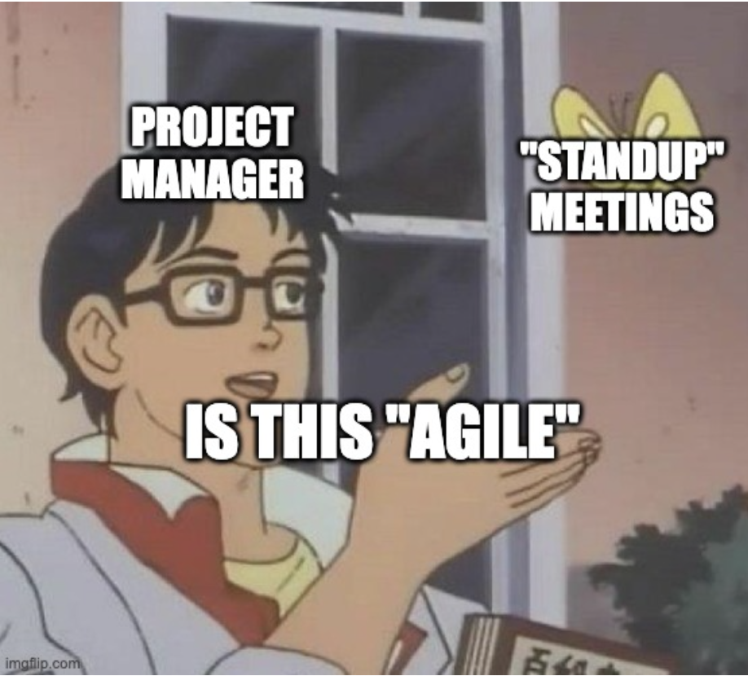
Since its debut via the Agile Manifesto, many interpretations of what ‘Agile’ means have come and gone. Is it following rules according to the Scrum Guide? Is it following a methodology like Kanban, XP or similar? Maybe.
If you have been a part of an ‘Agile’ team that performs the rituals and ceremonies without knowing why, then you’ve been following the Agile as a religion. If you do something but don’t know why, you don’t know that thing — you believe that thing. Much like Cargo Cult Science, merely copying the actions will not yield the desired result.
The following illustrations are an attempt to describe what I mean by Agile in the most concise way I know how. I hope that it will serve as an answer to frequently asked interview questions, and to quickly synchronize with those who are considering working with me. I expect to spend half my waking hours for the rest of my life working, and I care that those hours are as effective as they can be.
Scrum is the most popular flavor of Agile. If you are a software developer, then it’s more likely that you came across Scrum as going to useless meetings and counting points in Jira. Thus, Agile and Scrum have become dirty words that management uses to command and control their subordinates. Project managers call themselves Product Owners and deadlines are now called sprints. The words sound different, but the motion is the same. Nothing changed, except now there’s more meetings called standups, which are just status update meetings done while sitting down. Scrum is new Waterfall.
For fun: If my Grandmother had wheels she would have been a bike
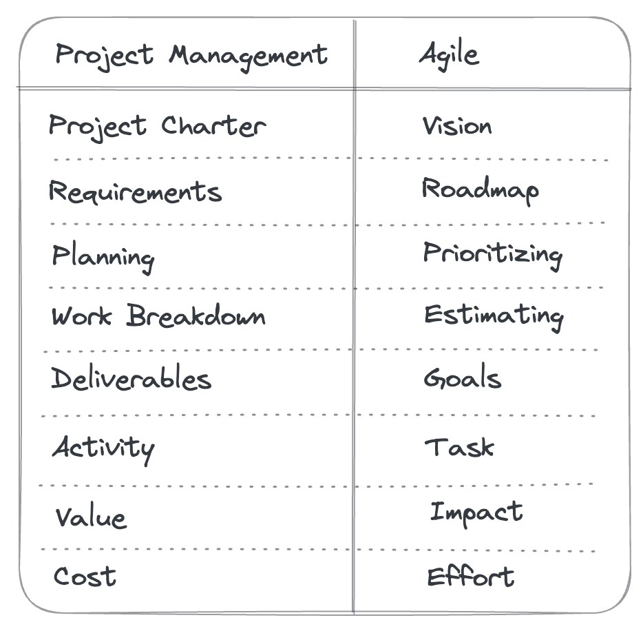 |
|---|
| Lingo from opposite sides of the spectrum |
If you have a project manager making gantt charts, doing all the planning, and assigning you the work, you’re not doing agile.
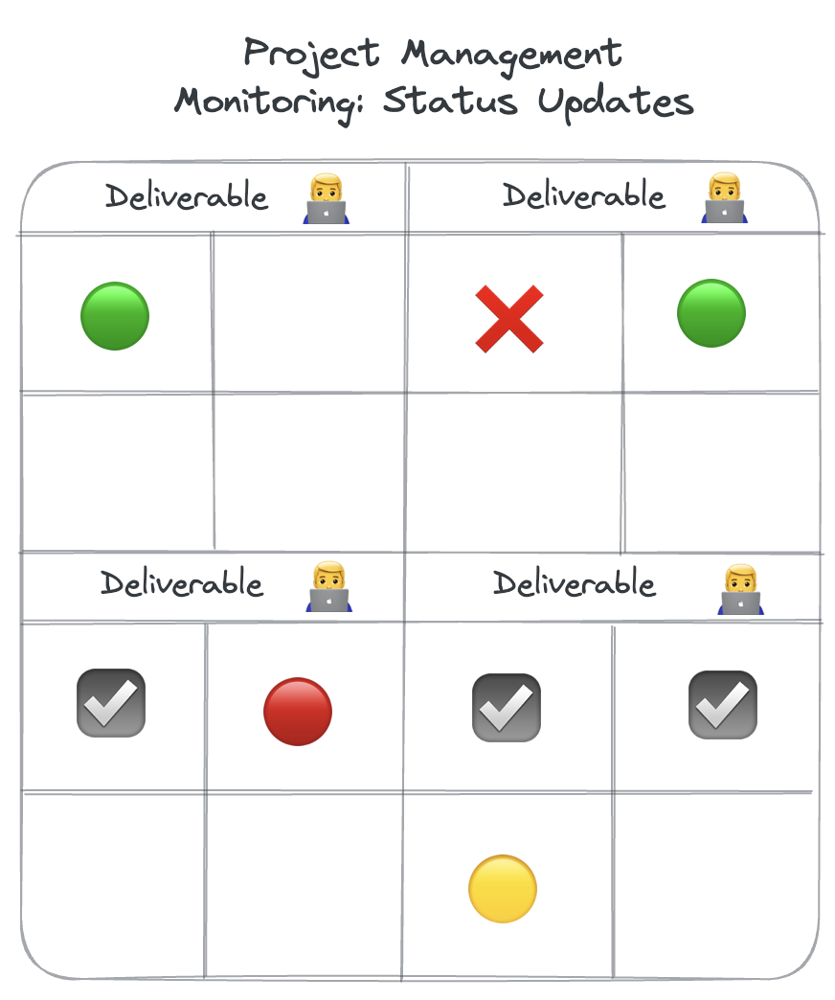
If everyone on your ‘team’ is working on different deliverables such that you need to update each other on the status of each one, you’re not doing agile.
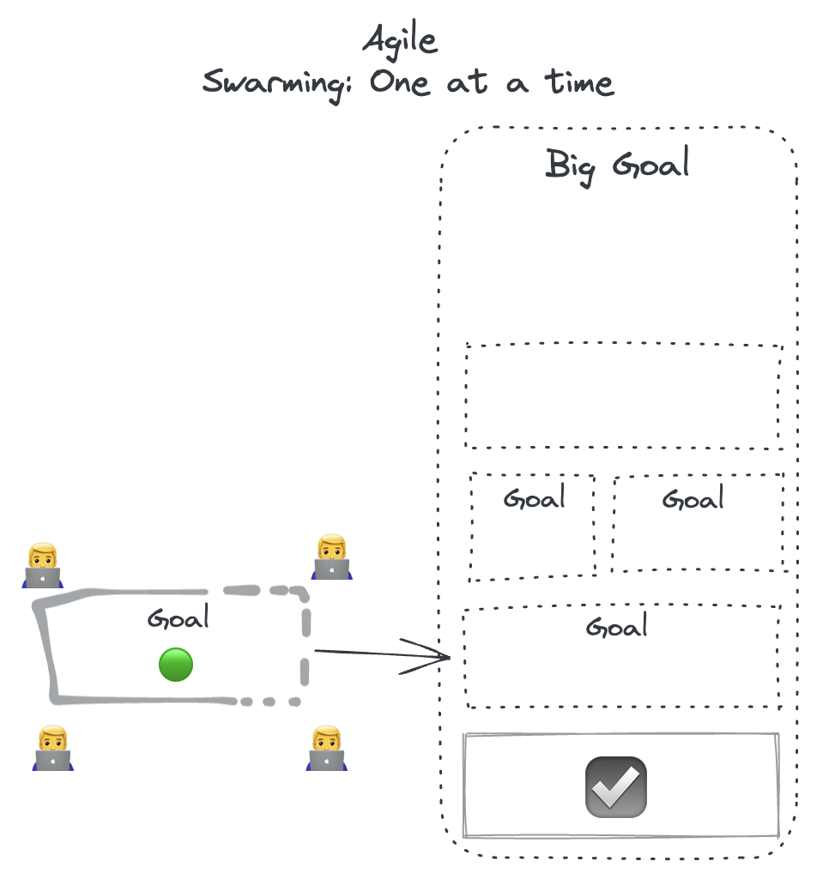
In agile, working together is the norm, not the exception. Why work together?
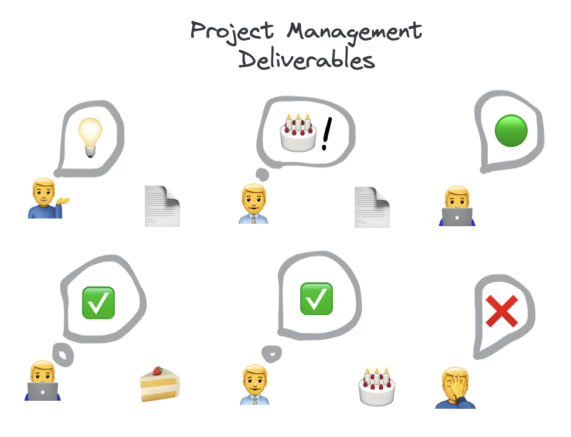
In project management, user needs are translated into requirements. Then, it’s turned into a plan document that gets handed off to the developer. The developer checks off the parts that make up the whole and when all the parts are complete, it’s delivered to the user with an underlying assumption that if the product requirements are complete, then the user needs are met. Unfortunately, user needs are often lost in translation during the many handoffs.
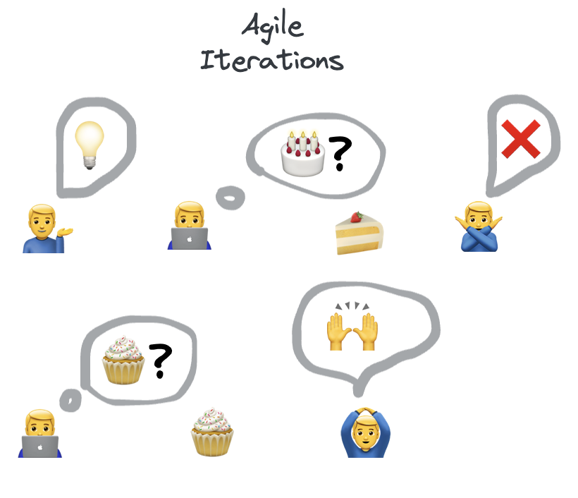
In agile, the assumption that what is built will resolve the user need is hopeful. To avoid building the wrong thing, guesses are made with half-baked prototypes. Each trial is framed as an experiment such that information flows in both directions in rapid succession.
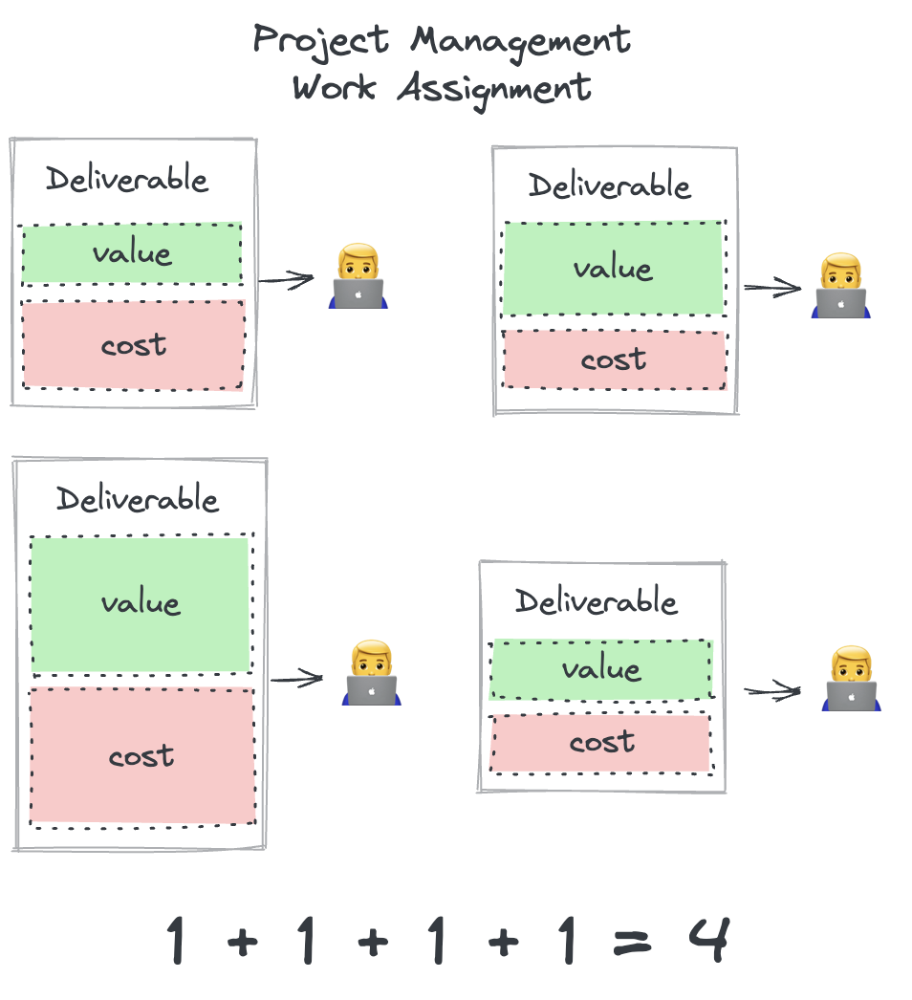
In project management, each deliverable is assigned to one person. This is easy to conceptualize for the project manager. Hopefully, each of the parts integrate flawlessly for the user.
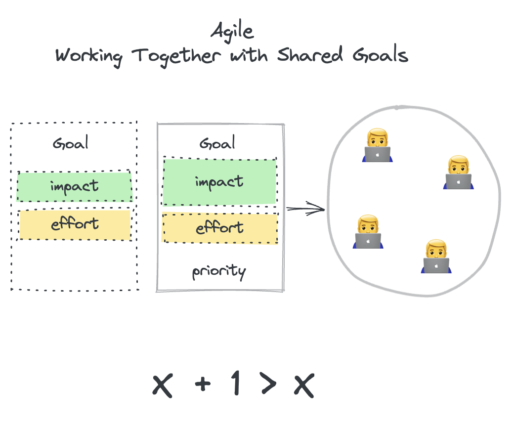
In agile, the increment that makes the most difference for a given effort takes priority. Instead of one person planning who does what by when, the developers come together to make the best guess at what the user needs, and which goal to pursue. The development team shares the same short-term goal at any given time.
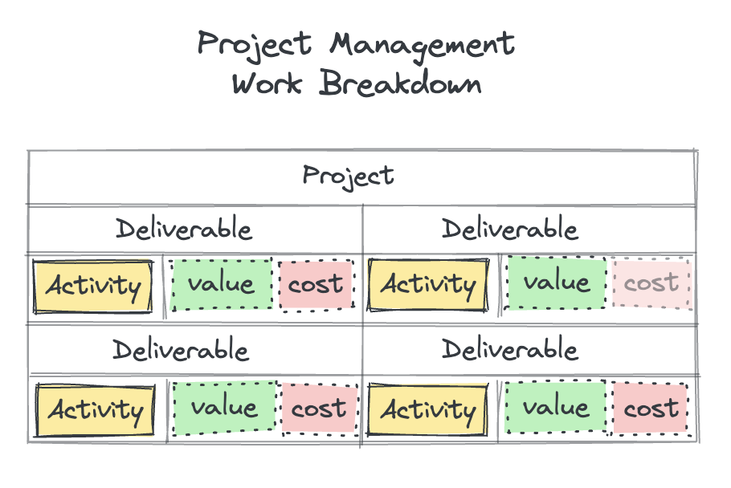
In project management, strides of effort are large in scope and an attempt is made in advance to make a ‘plan’. The plan specifies all the parts needed to deliver the whole. The formation and execution of the plan requires a manager.
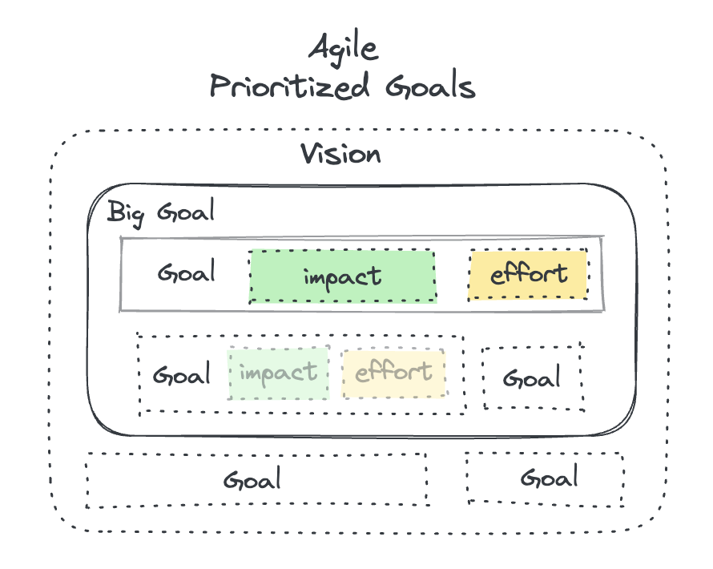
In agile, we recognize that the nature of the work and the environment is complex, not complicated. Therefore, goals are formed (often in the form of product increments) only as needed, and tasks are generated independent of centralized control. This often means the developer is unaware of what work will be done; instead opting to a shared goal that adheres to the vision. The commitment is towards the product’s outcome instead of the worker’s output.
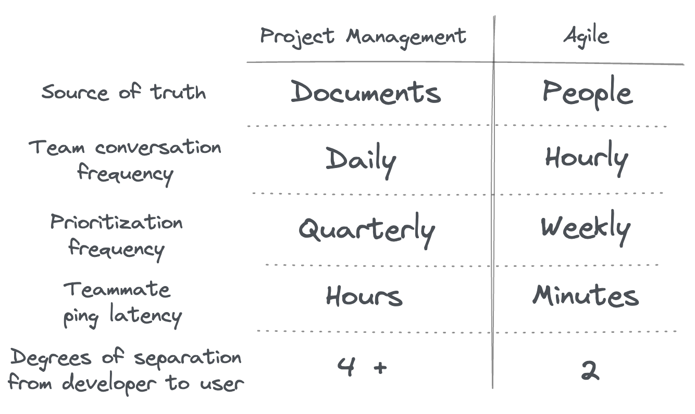
The basic unit of information is not bits or packets produced by a computer. Rather, it’s human understanding between the user and the developer. Focusing on data produced by software is myopia. This realization shifts the communication strategy from getting more data to getting understanding sooner. Building the wrong thing is worse than building nothing at all, so naturally, the frequency and latency of human communication is tighter for Agile teams.
I wish it was easier to describe what I mean by agile, but words are hard and everybody supposedly does “Agile”. I admit that there is no One True Way of doing it. There is no concensus or definition or standard. Different products face different constraints such that one size cannot fit all. But hopefully by describing it here, I was able to show you what I meant.